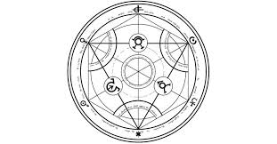

Transmutación humana
La transmutación humana es una forma prohibida y extremadamente peligrosa de alquimia que consiste en intentar crear o devolver la vida humana mediante procesos alquímicos.
La transmutación humana busca recrear un cuerpo humano usando materiales físicos (como carbono, agua, calcio, etc.) y, lo más polémico, intentar traer de vuelta el alma de una persona muerta o formar una nueva. Los alquimistas creen que, con los componentes adecuados y un círculo de transmutación complejo, podrían devolver la vida a alguien. Pero esto rompe las leyes naturales establecidas por el universo, particularmente la Ley del Intercambio Equivalente.
Ingredientes
Para realizar una transmutación humana se necesitan los siguientes ingredientes:
Resurrección
Los intentos de llevar difuntos seres humanos a la vida es la práctica más común de lo que se llama transmutación humana y desempeñan un papel importante en la serie Fullmetal Alchemist. Utilizando diversas teorías y métodos experimentales, múltiples alquimistas en el manga y el anime se han esforzado por resucitar a los seres queridos ya fallecidos, pero esas búsquedas terminan siempre en fracasos, a demás de que la práctica de esta técnica está prohibida por el flujo del universo y la alquimia en sí.
¿Porque esta prohibida?
Significado simbolico
La transmutación humana representa el deseo humano de vencer la muerte y el dolor, y también la arrogancia de intentar controlar lo que está más allá del entendimiento humano. La serie lo usa como crítica a la idea de que "el fin justifica los medios".